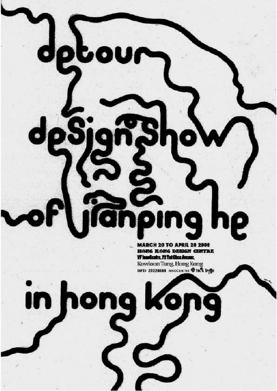

detour-Design Show of Jianping He in Hong Kong Measures: A0 Technique: Silk Screen Place and date: Berlin, April 2008 Client: Innocentre Hongkong, The Hong Kong Polytechnic University Description: Poster for my exhibition in Hong Kong 2008.
home back
